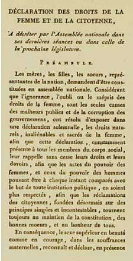
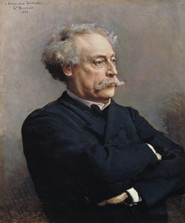
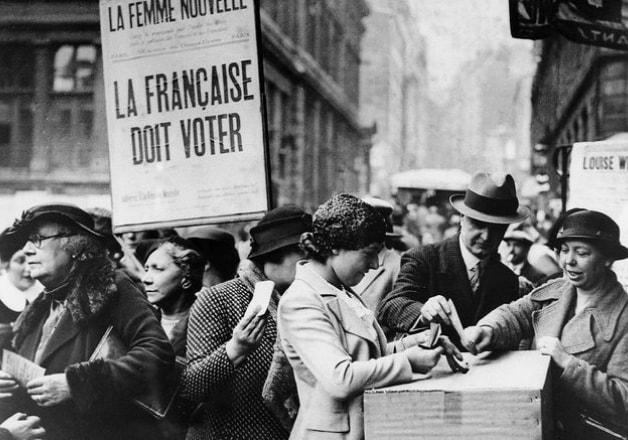
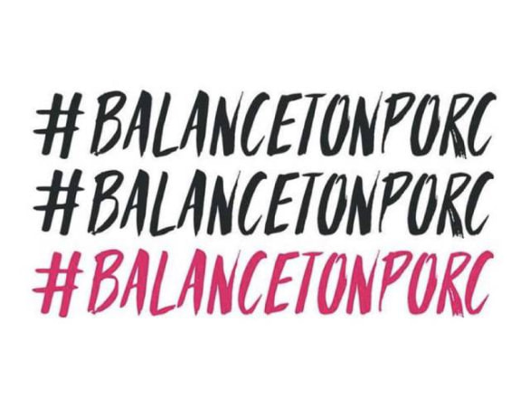

Le féminisme en image
Votre soif de féminisme n’est pas satisfaite ? Abreuvez-vous ici à l’aide de la galerie de portraits ainsi que de la frise chronologique réalisées pour vous !
Se rebella contre son père en offrant des obsèques à son frère
Héroïne de la guerre de 100 Ans
L’olympe de Gouges, rédactrice de la DDFC
Ministre à l’origine de la légalisation de l’interruption volontaire de grossesse
Première Chancelière allemande
Première femme candidate aux élections présidentielles américaines




Vous êtes devenus incollables sur le féminisme mais vous ne comprenez pas certains mots ? Le lexique n’attend plus que vous alors !